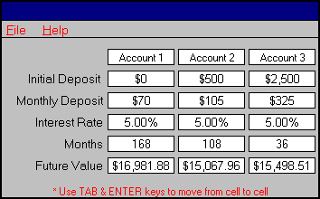

|


|
|
What Would You Do?
PROBLEM:
You are starting to set up a college account for your 3 children; ages 6, 9, and 15. You
have just determined you have $500 per month of your income and $3,000 of your existing
savings to invest. You have decided to set up separate savings accounts all paying 5%.
Knowing that you want to have approximately $15,000 for each child at the time of
graduation from high school and be ready for the first one in 3 years, what proportion of
your savings and Income should you distribute to each child to accomplish this goal?
There are 12 years (144 months), 9 years (108 months), and 3 years (36 months)
respectively for each child remaining until they graduate.
SOLUTION:
With the FinancialCalc Investment Calculator you can figure out your children's college future quickly
and easily. |

|
QuickFacts
Investment and
Savings
Our world of finance and money demands that we
become skilled at not only earning our money but saving and investing it wisely.
Much of the power of money comes knowing that a little put away each month is more
powerful than trying to put all your money in a business or venture and hope it will make
you rich.
If you are 20 years old and save $100 a month in an IRA account yielding 5% interest until
you retire at 62 - how much do you think you would have?
$171,134
at 10% interest you would have
$774,429
By doubling your interest you increase your savings by 4.5?
Now the goal becomes where to get the best interest return. |
|
|